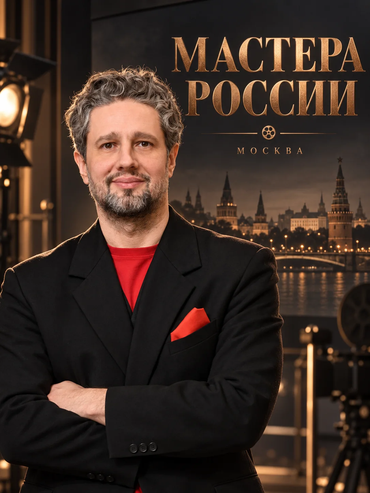

Развитие компании начинается с решений, которые меняют её будущее.
Уважаемые коллеги! Приглашаю познакомиться с консалтинговыми услугами по проектированию будущего бизнеса, организации управления развитием и запуску проектов изменений.
От образа будущего — к проектам, продуктам и результатам.

Виталий Ротань · инициатор и организатор проектов
Компания меняется. Вопрос — кто проектирует эти изменения?
Новые технологии, конкуренция, изменение цепочек поставок и рынков создают одновременно вызовы и возможности. Но даже правильный замысел не превращается автоматически в решение, а решение — в новую практику.
Моя задача — организовать совместную работу собственника, управленческой команды и профильных специалистов так, чтобы у компании появился согласованный путь развития и механизм движения по нему.
Три самостоятельных направления
Каждое предложение можно реализовать отдельно. Масштаб и содержание определяются задачей компании — от управленческой команды до распределённого холдинга.
FORESIGHT SESSION
Корпоративная форсайт-сессия. Карта будущего, стратегические инициативы и дорожная карта развития компании.
Подробнее о форсайте →Архитектура развития компании
Модель управления развитием: роли, процессы, приоритеты, ответственность и проектные механизмы.
Подробнее о направлении →Организация проектов развития
Организация подготовки, проверки, запуска и закрепления управленческих изменений в работе компании.
Подробнее о направлении →Не ещё один документ для архива. А согласованные решения, ответственные участники и понятный следующий шаг.
Российские решения. Международные возможности.
Виталий Ротань
Архитектор и организатор систем развития компаний.
Работаю с постановкой задач развития, проектированием форматов совместной работы собственников и руководителей, подбором компетенций и организацией исполнения согласованных решений.
Под конкретный проект формируется команда необходимых экспертов. Масштаб, состав работ и ответственность определяются в договоре.
- Работа с собственником и руководствомВыяснить реальный запрос и уровень решений.
- Архитектура проектаСобрать метод, участников, этапы и ожидаемые результаты.
- Координация компетенцийОбъединить управленческий, технологический и отраслевой опыт.
- Результат, пригодный к действиюЗафиксировать решения, ответственность и следующие шаги.
Приглашаю компании познакомиться с проектом и возможностями участия в сериале.
Открыть проект «Мастера России»